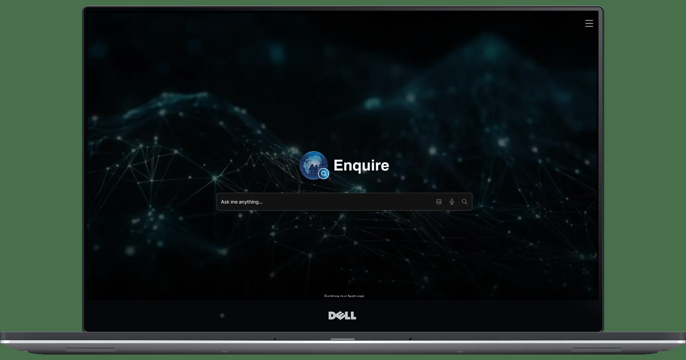
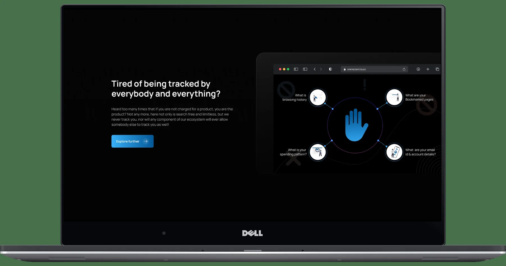
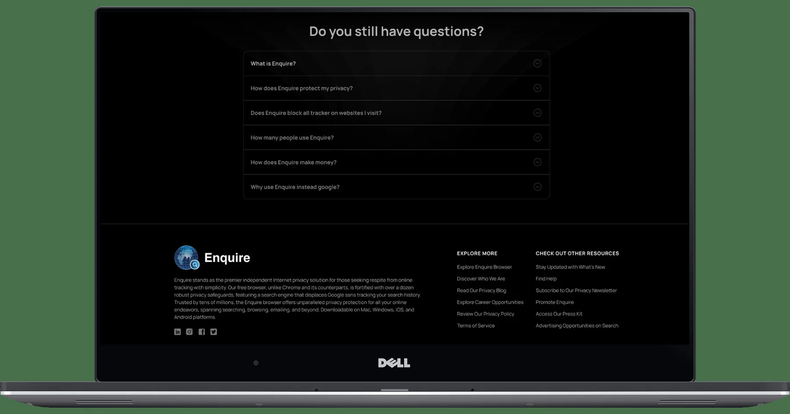

New AI search product
Enquire was being shaped as an AI-powered search and knowledge-discovery experience, spanning natural-language search, conversational answers and additional input modes.
01 / PRODUCT DESIGN CASE STUDY · AI SEARCH
Designing a conversational knowledge-discovery experience around how people ask, explore and continue.
Enquire was a 0→1 AI-powered search and knowledge-discovery product. The design challenge was to bring search, conversational interaction, voice, multilingual input and supporting trust information into one coherent experience—without making the product feel like a collection of disconnected tools.

A recruiter or design leader should understand the product challenge, your responsibility, your decisions and the delivered outcome before reading the detailed UX process.
Enquire was being shaped as an AI-powered search and knowledge-discovery experience, spanning natural-language search, conversational answers and additional input modes.
Translate the product direction into an understandable experience across entry, search results, conversation, history, voice, language and supporting product information.
Worked across product UX, information architecture, task flows, interaction patterns, responsive screens, trust communication and high-fidelity UI, collaborating with product and engineering stakeholders.
Delivered a cohesive set of designed experiences covering the homepage, knowledge discovery, conversation, voice, multilingual selection, privacy, responsive layouts and FAQ/support content.
The design challenge was not simply to add a chat box to search. It was to help people move from an expressed intent to useful information, understand the response and know what to do next.
A knowledge product should let a person express a question naturally, explore relevant information and continue without repeatedly reconstructing context.
Search, AI conversation, knowledge results, voice, language choice and trust/support content need a shared interaction model and consistent visual language.
A 0→1 product cannot solve every possible problem in its first release. MoSCoW gives product, design and engineering a shared language for protecting the core journey and sequencing supporting capabilities.
Without these, the central promise—ask, discover and continue—does not work.
These capabilities strengthen accessibility, confidence and reach, while supporting the core loop.
Useful enhancements that can follow once the core search and conversation journey is dependable.
Not represented in the supplied product scope/screens. Treat these as proposed non-goals, not confirmed stakeholder decisions.
Prioritization status: This MoSCoW matrix is a reasoned reconstruction based on the capabilities and screens available. It is not represented as an approved backlog or a verbatim prioritization workshop outcome. Confirm the release scope with the original product owner before using it as a historical claim.
A strong UX story distinguishes research evidence from design assumptions. The available Enquire material confirms stakeholder collaboration and the feature scope, but does not include participant details, interview transcripts, observation notes or test reports.
Align on the product proposition, priority capabilities, 0→1 constraints and the relationship between search, knowledge discovery and conversation.
Project context · supportedStructure the core questions around finding, understanding, verifying and continuing, then identify where voice and language affect the task.
UX synthesis · design framingEvaluate whether people can start a query, understand results, continue a conversation, select alternate input and find privacy information.
Proposed validation · not test results| Evidence / observation | Interpretation | Design response | Confidence |
|---|---|---|---|
| Homepage centers a natural-language input. | Question entry is the primary invitation into the product. | Protect input prominence and minimize competing actions. | Visible screen evidence |
| Knowledge search and conversation appear as distinct surfaces. | Targeted discovery and open-ended exploration are related but different tasks. | Make the relationship and transition between the surfaces understandable. | Visible screen evidence |
| Conversation history is visible alongside a response. | Continuity and return access are part of the experience model. | Keep the current thread and previous conversations discoverable. | Visible screen evidence |
| Voice and language controls are shown. | Alternative input methods are part of the product proposition. | Maintain one task model across text, voice and language preference. | Visible screen evidence |
| Privacy and FAQ content have dedicated surfaces. | Visitors need supporting context beyond the search control. | Make trust and help information easy to locate; align claims with actual policy. | Visible screen evidence |
The available interface evidence supports three task-based proto-archetypes. They describe needs that the product appears designed to serve; they are not validated demographic personas.
Task: locate a specific fact or topic.
“I know what I need to find. Help me get there without learning special search syntax.”
Task: understand a topic through follow-up.
“One answer leads to another question. Let me continue without starting over.”
Task: use a preferred input mode or language.
“Let me communicate in the way that feels most natural and accessible.”
Persona integrity: These are proto-archetypes derived from product tasks and visible features. Replace or refine them with real user segments once research data is available.
The journey links the entry point to discovery and continued exploration. Actions are mapped from the available screens; friction, sentiment and opportunities are hypotheses to validate with users.
This is a hypothesis-led journey map, not a record of measured user emotions. Validate sentiment and friction through observed sessions before adding an emotion curve or severity scores.
The IA groups the experience by the user's intent: begin a search, discover knowledge, continue in conversation, or find supporting product information.
IA scope: This is an experience-level IA derived from the supplied screen set and product capabilities, not a verified production URL tree. Confirm route names, search result taxonomy and content ownership against the implemented product.
These flows show how the product should behave as a task progresses. The visible screens support the main steps; error, permission and empty states are requirements to specify and validate.
Understand the promise.
Natural-language query.
Review relevant content.
Choose a result or next action.
Continue the inquiry.
Decision to validate: when should users remain in search results versus move into a conversational answer?
Start a question.
Express intent.
Understand response.
Carry context.
Reopen a thread.
Interaction requirement: differentiate a new conversation, current thread, response state and follow-up entry.
Start at the shared entry.
Select input mode.
Show current state.
Continue same task.
Recovery requirements: microphone permission denied, no speech detected, recognition failure, unavailable language, cancel and text fallback.
A senior case study explains the trade-off behind a decision. Each design response should connect a user or product need to an interface choice and a consequence.
| Decision | Need / risk | Design response | Trade-off / consequence |
|---|---|---|---|
| Make question entry primary | A first-time visitor may not understand where to begin. | Center the homepage around a natural-language question input. | Keep secondary navigation quieter so the main task remains obvious. |
| Separate discovery from conversation | Targeted lookup and exploratory dialogue have different information needs. | Provide knowledge search and a conversation surface with history. | Users need a clear transition so the two modes do not feel disconnected. |
| Preserve conversational context | Follow-up questions lose value if each query starts from zero. | Keep the current thread and conversation history visible. | Balance history access with space for the current answer. |
| Treat voice as alternate input | A separate voice journey adds a new mental model. | Keep voice entry within the same search experience. | Requires clear listening, permission, cancellation and error states. |
| Expose language selection | Language preference should not be hidden or assumed. | Make language choice visible at the point of input. | Longer language labels and script differences need layout resilience. |
| Give trust information a place | People need to understand the product's privacy proposition. | Provide privacy and FAQ/support content alongside the core product. | All privacy claims must align with real data handling and policy. |
The final screens below demonstrate the experience model in use. Each artifact is connected to the task it supports, rather than displayed as an unexplained gallery.
The homepage communicates the proposition and makes the first action immediately visible. The input is treated as the main point of entry, not as one control among many.
The knowledge surface supports focused discovery, while the conversation surface supports broader exploration and follow-up. The relationship between the two is a key IA and navigation decision.
The supplied screens demonstrate voice and language affordances. The detailed error and recovery paths should be verified against implemented behavior before claiming they were delivered.

Privacy content is part of the product proposition and should be consistent with actual policies. The responsive screen demonstrates the product considered across desktop and mobile layouts.

Supporting information is available without competing with the central search task, helping visitors who need more context before using the product.
A design system is not just a palette. It connects foundations, components, variants, states and usage rules so the product behaves consistently as it grows.
Observed visual direction: dark surfaces, cool light text, cyan action emphasis and violet secondary emphasis. Colors are visual estimates from supplied screens, not extracted production tokens.
Define a type scale for page titles, response content, result metadata, labels and supporting content. Confirm actual family and weights in the source design file.
Use a documented spacing scale, alignment rules, responsive gutters and content-width constraints across desktop and mobile.
| Component family | Variants to define | Behavior contract | Where used |
|---|---|---|---|
| Search input | Default · focus · populated · disabled · error | Label, placeholder, submit, clear, keyboard behavior. | Home / knowledge |
| Conversation composer | Empty · typing · sending · disabled | Preserve thread context and provide clear submission status. | Conversation |
| Answer block | Loading · response · partial · error | Distinguish response content, evidence and next action. | Conversation |
| Language selector | Closed · open · selected · unavailable | Expose current choice and support longer labels/scripts. | Search |
| Voice control | Idle · permission · listening · waiting · failed | Communicate microphone state, retry, cancel and text fallback. | Voice |
| History navigation | Default · active · empty · expanded | Make current thread and prior conversations distinguishable. | Conversation |
| FAQ accordion | Collapsed · expanded · focus | Accessible disclosure state and keyboard operation. | Support content |
The most important risks are whether people understand the answer, trust what they see, continue the task and recover when voice or language input does not work as expected.
| Test task | Observe | Success signal | Priority |
|---|---|---|---|
| Find a specific answer | Can the user start and locate relevant information? | Task completed without moderator intervention. | Must test |
| Ask a follow-up | Does the user understand how to continue the same thread? | Contextual follow-up without accidental restart. | Must test |
| Verify a response | Can the user identify supporting evidence and its limits? | Can explain what supports the response. | Must test |
| Use voice | Can the user understand permission, listening and failure states? | Completes voice input or recovers to text. | Must test |
| Change language | Can the user select and recognize the active language? | Correct language is clearly selected. | Should test |
| Use on mobile | Can the user read the answer and reach primary actions? | Completes the same core task at mobile width. | Should test |
The defensible result is the coherent product experience represented by the delivered screen set and the UX structure connecting its core capabilities.
DESIGN CONTRIBUTION
Translated the AI search proposition into a task-centered experience model.
Connected search entry, knowledge discovery, conversation, input modes and support content.
Made the paths from asking to exploring and continuing explicit.
Designed the visual surfaces shown for search, knowledge results, conversation, voice, multilingual, privacy, responsive and FAQ.
Identified shared foundations, component families and states needed for consistency.
Worked with product and engineering stakeholders to shape implementation-oriented experience design.
AI product design is not just designing a prompt field or chat window. The real work is connecting user intent, information architecture, response comprehension, trust cues and the next meaningful action. A consistent mental model matters even more when the product supports multiple ways to communicate.